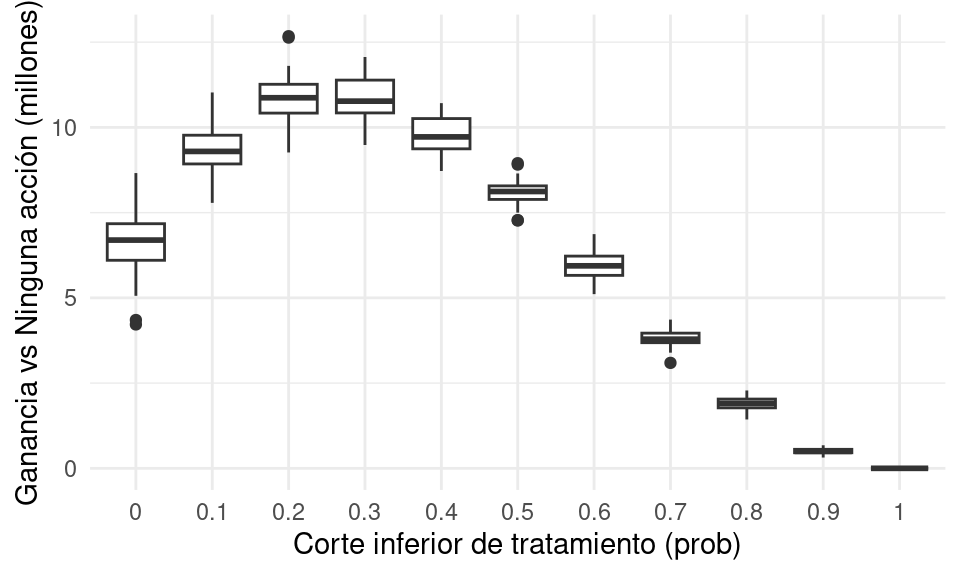
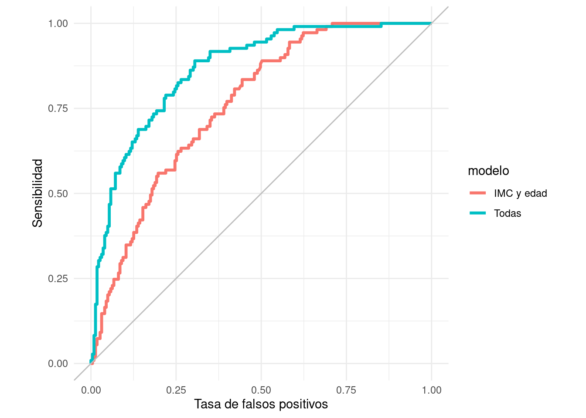
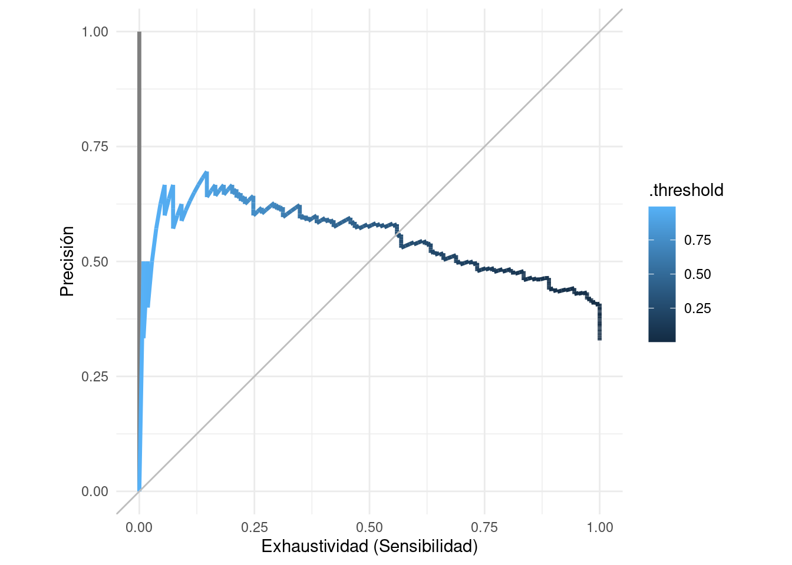
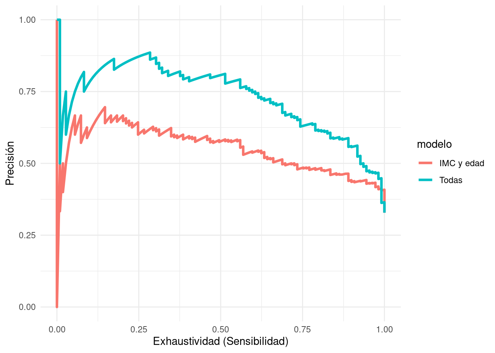
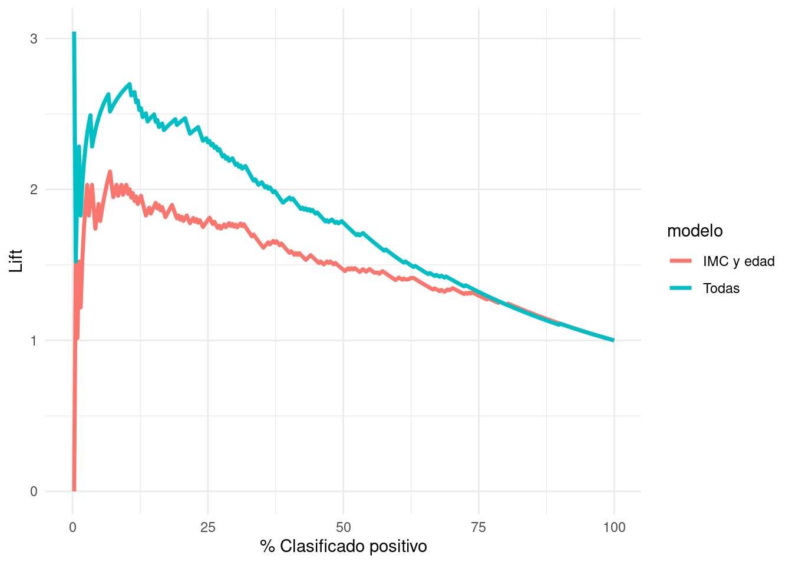

# esta tabla nos da la probabilidad de abandono según
# algún modelo que ajustamos
clientes <- tibble(id = 1:20000, valor = 10000) |>
mutate(prob_pred = rbeta(length(valor), 1, 2)) 9 Decisiones de clasificación
En problemas de clasificación, queremos usar información del modelo para tomar cierta acción. Ejemplos típicos de que requieren de resolver un problema de clasificación son:
- Dar un tratamiento a una persona para combatir una enfermedad. El tratamiento tienen costos monetarios y efectos secundarios. ¿Cuándo deberíamos tratar o hacer seguimiento de una persona?
- Decidir si hacemos un descuento a un cliente que tiene probabilidad alta de cancelar su contrato en los siguientes 3 meses.
- Para una búsqueda dada de restaurantes, decidir qué restaurantes debemos poner en las primeras posiciones de los resultados de la búsqueda.
- Decidir si una imagen contiene una persona o no, con el fin de activar una alarma en ciertas condiciones.
En la mayoría de estos ejemplos, no queremos encontrar un clasificador si un cliente va abandonar o no, tiene una enfermedad o no o si un segmento de imagen contiene una persona o no, etc. Esto solo aplica para problemas con tasas de ruido muy bajas donde podemos separar claramente las clases - lo cual no es tan común, especialmente en problemas de negocios, por ejemplo.
Igual que en regresión producir intervalos de predicción (en problemas que no son de ruido bajo) permiten tomar mejores decisiones downstream del modelo, en clasificación producir probabilidades de clase permite tomar mejores decisiones que toman en cuenta aspectos del problema particular que nos interesa.
En todos los problemas de arriba, la dificultad es que al tomar la decisión de clasificar un caso un una clase específica, para los cuales se va a llevar a cabo una acción, diversos costos intervienen cuando cometemos distintos errores:
Por ejemplo, diagnosticar a alguien con una enfermedad cuando no la tiene tiene consecuencias distintas a diagnosticar como libre de enfermedad a alguien que la tiene. Estas consecuencias dependen de cómo son son los tratamientos consecuentes, y de qué tan peligrosa es la enfermedad.
Cuando usamos un buscador como Google, es cualitativamente diferente que el buscador omita resultados relevantes a que nos presente resultados irrelevantes.
En general, los costos de los distintos errores son distintos, y en muchos problemas quiséramos entenderlos y controlarlos individualmente. Aunque en teoría podríamos asignar costos a los errores y definir una función de pérdida, en la práctica esto muchas veces no es tan fácil o deseable.
9.1 Decisiones basadas en probabilidades
Supongamos que tenemos un plan para retener a clientes. Construimos un modelo que nos da la probabilidad de abandono para cada cliente. Una primera reacción es poner un punto de corte para etiquetar a los clientes como “abandonadores” o “no abandonadores”. Esto no es tan buena idea.
Supongamos que
- el tratamiento de retención cuesta 1200 pesos por cliente,
- estimamos mediante pruebas que nuestro tratamiento reduce la probabilidad de abandono en un 60%
- Tenemos algún tipo de valuación del valor de los clientes.
Usando las probabilidades podemos decidir en estrategias de aplicación del tratamiento. Simulamos una cartera de clientes y sus valuaciones (que suponemos constantes, pero normalmente también son salidas de modelos predictivos). Las probabilidades de abandono suponemos que están dada por un modelo:
calc_perdida <- function(corte, factor_ret, costo){
perdida_no_trata <- filter(clientes, prob_pred < corte) |>
mutate(costo = ifelse(rbinom(length(prob_pred), 1, prob_pred) == 1, valor, 0)) |>
summarise(total = sum(costo)) |>
pull(total)
perdida_trata <- filter(clientes, prob_pred >= corte) |>
mutate(costo = ifelse(rbinom(length(prob_pred), 1, prob_pred*factor_ret) == 1, valor, 0)) |>
summarise(total = sum(costo)) |>
pull(total)
perdida_cf <- filter(clientes, prob_pred >= corte) |>
mutate(costo = ifelse(rbinom(length(prob_pred), 1, prob_pred) == 1, valor, 0)) |>
summarise(total = sum(costo)) |>
pull(total)
total <- perdida_no_trata + perdida_trata - (perdida_no_trata + perdida_cf) +
costo*nrow(filter(clientes, prob_pred > corte))
total
}
perdidas_sim <- map_dfr(rep(seq(0,1, 0.1), 50),
function(x){
perdida_sim <- calc_perdida(x, 0.6, 1000)
tibble(perdida = perdida_sim, corte = x)
}) |> bind_rows()
ggplot(perdidas_sim, aes(x = factor(corte), y = - perdida / 1e6)) +
geom_boxplot() + ylab("Ganancia vs Ninguna acción (millones)") +
xlab("Corte inferior de tratamiento (prob)")
¿Dónde habría que hacer el punto de corte para tratar a los clientes?
9.2 Análisis de error para clasificadores binarios
Cuando la variable a predecir es binaria (dos clases), podemos etiquetar una clase como positiva y otra como negativa. En el fondo no importa cómo cataloguemos cada clase, pero para problemas particulares una asignación puede ser más natural. Por ejemplo, en diagnóstico de enfermedades, positivo=tiene la enfermedad, en análisis de crédito, positivo=cae en impago, en sistemas de recomendacion, positivo = le gusta el producto X, en recuperación de textos, positivo=el documento es relevante a la búsqueda, etc.
Tenemos entonces que:
- Aunque podemos usar probabilidades y medidas como pérdida logística o score de Brier para ajustar y seleccionar modelos, como discutimos antes estas medidas pueden ser difíciles de intepretar para entender el desempeño de un predictor particular.
- Los costos de cada tipo de error muchas veces no están planteados claramente desde un principio, y puede ser que se tomen varias decisiones con nuestros predictores dependiendo de la aplicación. Todas estas decisiones pueden tener costos diferentes.
Podemos construir entonces un clasificador como sigue.
Clasificadores con punto de corte
Si \(\hat{p}(x)\) en nuestra probabilidad estimada de positivo, entonces la regla de clasificación con punto de corte \(\alpha\) es:
- Si \(\hat{p}(x)\geq \alpha\), clasificamos el caso como positivo \(\hat{y} = 1\)
- Si \(\hat{p}(x)< \alpha\), clasificamos el caso como negativo \(\hat{y} = 0\)
Hay dos tipos de errores en un clasificador binario (positivo - negativo):
- Falsos positivos (fp): clasificar como positivo a un caso negativo.
- Falsos negativos (fn): clasificar como negativo a un caso positivo.
A los casos clasificados correctamente les llamamos positivos verdaderos (pv) y negativos verdaderos (nv).
La matriz de confusion es entonces
tabla <- tibble(' ' = c('positivo.pred','negativo.pred','total'),
'positivo'=c('vp','fn','pos'),
'negativo'=c('fp','vn','neg'),
'total' = c('pred.pos','pred.neg',''))
knitr::kable(tabla)| positivo | negativo | total | |
|---|---|---|---|
| positivo.pred | vp | fp | pred.pos |
| negativo.pred | fn | vn | pred.neg |
| total | pos | neg |
Nótese que un clasificador bueno, en general, es uno que tiene la mayor parte de los casos en la diagonal de la matriz de confusión.
Podemos estudiar a nuestro clasificador en términos de las proporciones de casos que caen en cada celda, que dependen del desempeño del clasificador en cuanto a casos positivos y negativos. La nomenclatura puede ser confusa, pues en distintas áreas se usan distintos nombres para estas proporciones:
Tasa de falsos positivos: proporción de veces que nos equivocamos en la clasificación para casos negativos. \[\frac{fp}{fp+nv}=\frac{fp}{neg}\]
Tasa de falsos negativos: proporción de veces que nos equivocamos en la clasificación para casos positivos. \[\frac{fn}{pv+fn}=\frac{fn}{pos}\]
Especificidad: tasa de correctos entre negativos, es el complemento de la tasa de falsos positivos. \[\frac{vn}{fp+vn}=\frac{vn}{neg}\]
Sensibilidad o Recall o Exhaustividad: tasa de correctos entre positivos, es el complemento de la tasa de falsos negativos. \[\frac{vp}{vp+fn}=\frac{vp}{pos}\]
También existen otras que tienen como base la clasificación en lugar de la clase verdadera, y en algunos casos estas ayudan en la interpretación:
Precisión o valor predictivo positivo: tasa de correctos entre todos los que clasificamos como positivos \[\frac{vp}{vp+fp}=\frac{vp}{pred.pos}\]
Valor predictivo negativo: tasa de correctos entre todos los que clasificamos como negativos \[\frac{vn}{fn+vn}=\frac{vn}{pred.neg}\]
Dependiendo de el tema y el objetivo hay medidas más naturales que otras:
- En búsqueda y recuperación de documentos o imagenes, o detección de fraude ( donde positivo = el documento es relevante / la transacción es fraudulenta y negativo = el documento no es relevante / transacción normal), se usa más comunmente precisión y exhaustividad. La exhaustividad (recall o sensibilidad) es muy importante porque mide qué tan completa es la lista de potenciales positivos que entregamos. Pero para que el sistema sea utilizable (efectivo para el usuario), la mayor parte de los resultados entregados deben ser relevantes. Entonces es natural usal la precisión, que mide, entre todos los resultados con predicción positiva, que presentamos al usuario, qué porcentaje realmente son relevantes (precisión).
Un clasificador preciso es uno que tal que una fracción alta de sus predicciones positivas son positivos verdaderos. Sin embargo, podría no ser muy sensible: de todos los positivos que hay, solamente clasifica como positivos a una fracción chica. Conversamente, un clasificador podría ser muy sensible: captura una fracción alta de los positivos, pero también clasifica como positivos a muchos casos que son negativos (precisión baja).
- En pruebas para detectar alguna enfermedad, muchas veces se utliza sensibilidad (recall o exhaustividad) y especificidad (qué proporción de negativos excluimos). Sensibilidad nos dice si estamos capturando a la mayoría de los verdaderos positivos. La especificidad nos dice qué tan bien estamos descartando casos que son verdaderos negativos. Si después de la prueba se propone algún tratamiento, estas dos cantidades nos dicen qué proporción de “enfermos” vamos a tratar y qué proporción de “sanos” vamos a tratar.
Cada clasificador tiene un balance distinto precisión y sensibilidad (o sensibilidad y especificidad) . Muchas veces no escogemos clasificadores por la tasa de incorrectos solamente, sino que intentamos buscar un balance adecuado entre el comportamiento de clasificación para positivos y para negativos.
Medidas resumen de desempeño
Medidas resumen populares de los errores de un clasificador particular son:
Tasa de clasificación incorrecta \[\frac{fn+fv}{neg+pos}\] Y existen otras medidas que intentan resumir los dos tipos de errores de distinta manera, como
Medida F (media armónica de precisión y recall) \[2\frac{precision \cdot recall}{precision + recall}\] Se usa la la media armónica que penaliza más fuertemente desempeño malo en alguna de nuestras dos medidas (precisión y recall) que el promedio armónico.
Ejemplo (medida F)
Si precision = 0.01 (muy malo) y recall = 1 (excelente), o recall=0.01 y precisión = 1 (excelente), la media usual considera igual de buenos estos dos clasificadores. A su vez, estos dos se califican similar a un clasificador con precision = 0.5 y recall = 0.5. Sin embargo, la media armónica (F) da un score mucho más bajo a los primeros dos clasificadores:
media_armonica <- function(x){
1/mean(1/x)
}
media_armonica(c(0.01, 1))[1] 0.01980198media_armonica(c(0.5, 0.5))[1] 0.5Nótese que estas medidas no toman en cuenta las probablidades de clase, y son para un clasificador particular.
Ejercicio
Calcular la matriz de confusión (sobre la muestra de prueba) para el clasificador logístico de diabetes en términos de imc y edad (usando punto de corte de 0.5). Calcula adicionalmente con la muestra de prueba sus valores de especificidad y sensibilidad, y precisión y recall.
diabetes_ent <- as_tibble(MASS::Pima.tr) |>
mutate(type = as.character(type))
diabetes_pr <- as_tibble(MASS::Pima.te) |>
mutate(type = as.character(type))
# normalizer
receta_diabetes <- recipe(type ~ ., diabetes_ent) |>
step_mutate(type = factor(type, levels = c("Yes", "No"))) |>
step_normalize(all_predictors()) |>
prep()
# ajustar
library(keras)
Attaching package: 'keras'The following object is masked from 'package:yardstick':
get_weightsmod_1 <- logistic_reg() |>
set_engine("keras") |>
set_mode("classification") |>
set_args(
epochs = 250,
optimizer = optimizer_sgd(learning_rate = 0.3),
batch_size = nrow(diabetes_ent),
verbose = FALSE) |>
fit(type ~ bmi + age, juice(receta_diabetes))
# otra opcion es
# mod_1 <- logistic_reg() |> set_engine("glm") |> set_mode("classification")Ahora probamos. Primero calculamos directamente:
prueba_baked <- bake(receta_diabetes, diabetes_pr)
preds_prueba <- predict(mod_1, prueba_baked, type ='prob') |>
bind_cols(prueba_baked)
# usar punto de corte 0.5
preds_prueba <- preds_prueba |>
mutate(clase_pred_g = ifelse(
preds_prueba$.pred_Yes > 0.5, "pred_Yes", "pred_No"))
# calcular matriz de confusión
confusion <- preds_prueba |>
group_by(type, clase_pred_g) |>
count() |> pivot_wider(names_from = type, values_from = n) |>
ungroup() |>
column_to_rownames("clase_pred_g")
# en los renglones están las predicciones
confusion[c("pred_Yes", "pred_No"), ] Yes No
pred_Yes 42 29
pred_No 67 194Finalmente podemos calcular:
sensibilidad_1 <- confusion["pred_Yes", "Yes"] /
sum(confusion[, "Yes"])
precision_1 <- confusion["pred_Yes", "Yes"] /
sum(confusion["pred_Yes", ])
sprintf("Precisión: %.2f, Sensibilidad (recall): %.2f",
precision_1, sensibilidad_1)[1] "Precisión: 0.59, Sensibilidad (recall): 0.39"O también podemos hacer:
preds_prueba <- preds_prueba |>
mutate(clase_pred = ifelse(.pred_Yes > 0.5, "Yes", "No")) |>
mutate(clase_pred = factor(clase_pred,
levels = c("Yes", "No")))
## calcular con yardstick
metricas_1 <- metric_set(accuracy, precision, recall)
preds_prueba |>
metricas_1(type, estimate = clase_pred)# A tibble: 3 × 3
.metric .estimator .estimate
<chr> <chr> <dbl>
1 accuracy binary 0.711
2 precision binary 0.592
3 recall binary 0.385También podemos evaluar con
metricas_2 <- metric_set(accuracy, sens, spec)
preds_prueba |>
metricas_2(type, estimate = clase_pred)# A tibble: 3 × 3
.metric .estimator .estimate
<chr> <chr> <dbl>
1 accuracy binary 0.711
2 sens binary 0.385
3 spec binary 0.8709.3 Análisis de error según punto de corte
Distintos valores de de \(\alpha\) dan distintos perfiles de sensibilidad-especificidad para una misma estimación de las probabilidades condicionales de clase: Para minimizar la tasa de incorrectos conviene poner \(\alpha= 0.5\). Sin embargo, es común que este no es el único fin de un clasificador bueno (pensar en ejemplo de fraude).
- Cuando incrementamos \(\alpha\), quiere decir que exigimos estar más seguros de que un caso es positivo para clasificarlo como positivo. Esto quiere decir que la sensibilidad (recall) tiende a ser más chica. Por otro lado la precisión tiende a aumentar, pues el porcentaje de verdaderos positivos entre nuestras predicciones positivas será mayor. También la especificidad tiende a ser más grande.
Ejemplo
Por ejemplo, si en el caso de diabetes incrementamos el punto de corte a 0.7:
preds_prueba <- preds_prueba |>
mutate(clase_pred = ifelse(.pred_Yes > 0.7, "Yes", "No")) |>
mutate(clase_pred = factor(clase_pred,
levels = c("Yes", "No")))
## calcular con yardstick
metricas <- metric_set(accuracy, precision, recall)
preds_prueba |>
metricas(type, estimate = clase_pred)# A tibble: 3 × 3
.metric .estimator .estimate
<chr> <chr> <dbl>
1 accuracy binary 0.711
2 precision binary 0.627
3 recall binary 0.294La precisión mejora, pero la sensibilidad (recall) se deteriora. Visto desde el punto de vista de sensiblidad y especificidad:
preds_prueba |>
metricas_2(type, estimate = clase_pred)# A tibble: 3 × 3
.metric .estimator .estimate
<chr> <chr> <dbl>
1 accuracy binary 0.711
2 sens binary 0.294
3 spec binary 0.915- Cuando hacemos más chico \(\alpha\), entonces exigimos estar más seguros de que un caso es negativo para clasificarlo como negativo. Esto aumenta la sensibilidad, pero la precisión baja. Por ejemplo, si en el caso de diabetes ponemos el punto de corte en 0.3:
Ejemplo
preds_prueba <- preds_prueba |>
mutate(clase_pred = ifelse(.pred_Yes > 0.3, "Yes", "No")) |>
mutate(clase_pred = factor(clase_pred, levels = c("Yes", "No")))
## calcular con yardstick
metricas <- metric_set(accuracy, precision, recall)
preds_prueba |>
metricas(type, estimate = clase_pred)# A tibble: 3 × 3
.metric .estimator .estimate
<chr> <chr> <dbl>
1 accuracy binary 0.714
2 precision binary 0.565
3 recall binary 0.560preds_prueba |>
metricas_2(type, estimate = clase_pred)# A tibble: 3 × 3
.metric .estimator .estimate
<chr> <chr> <dbl>
1 accuracy binary 0.714
2 sens binary 0.560
3 spec binary 0.789Buscamos ahora hacer análisis de este tipo para todos los posibles puntos de corte. Dos técnicas son curvas ROC y curvas de precisión-exhaustividad, y medidas resumen asociadas.
9.4 Espacio ROC de clasificadores
Podemos visualizar el desempeño de cada uno de estos clasificadores construidos con puntos de corte mapeándolos a las coordenadas de tasa de falsos positivos (1-especificidad) y sensibilidad:
clasif_1 <- tibble(
corte = c('0.3','0.5','0.7','perfecto','azar'),
tasa_falsos_pos=c(0.24,0.08,0.02,0,0.7),
sensibilidad =c(0.66, 0.46,0.19,1,0.7))
ggplot(clasif_1, aes(x=tasa_falsos_pos, y=sensibilidad,
label=corte)) + geom_point() +
geom_abline(intercept=0, slope=1) +
xlim(c(0,1)) +ylim(c(0,1)) + geom_text(hjust=-0.3, col='red')+
xlab('1-especificidad (tasa falsos pos)')- Nótese que agregamos otros dos clasificadores, uno perfecto, que tiene tasa de falsos positivos igual a 0 y sensibilidad igual a 1.
- En esta gráfica, un clasificador \(G_2\) que está arriba a la izquierda de \(G_1\) domina a \(G_1\), pues tiene mejor especificidad y mejor sensibilidad. Entre los clasificadores 0.3, 0.5 y 0.7 de la gráfica, no hay ninguno que domine a otro.
- Todos los clasificadores en la diagonal son equivalentes a un clasificador al azar. ¿Por qué? La razón es que si cada vez que vemos un nuevo caso lo clasificamos como positivo con probabilidad \(p\) fija y arbitraria. Esto implica que cuando veamos un caso positivo, la probabilidad de ’atinarle’ es de p (sensibilidad), y cuando vemos un negativo, la probabilidad de equivocarnos también es de 1-p (tasa de falsos positivos), por lo que la espcificidad es p también. De modo que este clasificador al azar está en la diagonal.
- ¿Qué podemos decir acerca de clasificadores que caen por debajo de la diagonal? Estos son clasificadores particularmente malos, pues existen clasificadores con mejor especificidad y/o sensibilidad que son clasificadores al azar! Sin embargo, se puede construir un mejor clasificador volteando las predicciones, lo que cambia sensibilidad por tasa de falsos positivos.
- ¿Cuál de los tres clasificadores es el mejor? En términos de la tasa de incorrectos, el de corte 0.5. Sin embargo, para otros propósitos puede ser razonable escoger alguno de los otros.
9.5 Perfil de un clasificador binario y curvas ROC
En lugar de examinar cada punto de corte por separado, podemos hacer el análisis de todos los posibles puntos de corte mediante la curva ROC (receiver operating characteristic, de ingeniería).
Tip
Para un problema de clasificación binaria, dadas estimaciones \(\hat{p}_1(x)\), la curva ROC grafica todos los pares de (1-especificidad, sensibilidad) para cada posible punto de corte \(\hat{p}_1(x) > \alpha\).
Ejemplo
roc_tbl <- roc_curve(preds_prueba,
truth = type, .pred_Yes)
roc_tbl# A tibble: 321 × 3
.threshold specificity sensitivity
<dbl> <dbl> <dbl>
1 -Inf 0 1
2 0.00305 0 1
3 0.00345 0.00448 1
4 0.00406 0.00897 1
5 0.00437 0.0135 1
6 0.00476 0.0224 1
7 0.00486 0.0269 1
8 0.00504 0.0314 1
9 0.00512 0.0359 1
10 0.00562 0.0404 1
# ℹ 311 more rowsggplot(roc_tbl,
aes(x = 1 - specificity, y = sensitivity)) +
geom_path(aes(colour = .threshold), size = 1.2) +
geom_abline(colour = "gray") +
coord_equal() +
xlab("Tasa de falsos positivos") +
ylab("Sensibilidad")Warning: Using `size` aesthetic for lines was deprecated in ggplot2 3.4.0.
ℹ Please use `linewidth` instead.En esta gráfica podemos ver todos los clasificadores posibles basados en las probabilidades de clase. Podemos usar estas curvas como evaluación de nuestros clasificadores, dejando para más tarde la selección del punto de corte, si esto es necesario (por ejemplo, dependiendo de los costos de cada tipo de error).
También podemos definir una medida resumen del desempeño de un clasificador según esta curva:
Tip
La medida AUC (area under the curve) para un clasificador es el área bajo la curva generada por los pares sensibilidad-especificidad de la curva ROC.
roc_auc(preds_prueba, type, .pred_Yes)# A tibble: 1 × 3
.metric .estimator .estimate
<chr> <chr> <dbl>
1 roc_auc binary 0.761Cuanto más cerca de uno es este valor, mejor discriminan las probabilidades.
También es útil para comparar modelos. Consideremos el modelo de los datos de diabetes que incluyen todas las variables:
mod_2 <- logistic_reg() |>
set_engine("keras") |>
set_mode("classification") |>
set_args(epochs = 250,
optimizer = optimizer_sgd(lr = 0.3),
batch_size = nrow(diabetes_ent),
verbose = FALSE) |>
fit(type ~ ., juice(receta_diabetes))
preds_prueba_completo <- predict(
mod_2, prueba_baked, type ='prob') |>
bind_cols(prueba_baked)
preds_prueba_2 <- bind_rows(
preds_prueba |> mutate(modelo = "IMC y edad"),
preds_prueba_completo |> mutate(modelo = "Todas")) |>
group_by(modelo)Y graficamos juntas:
roc_2_tbl <- roc_curve(preds_prueba_2, type, .pred_Yes)
ggplot(roc_2_tbl, aes(x = 1 - specificity, y = sensitivity)) +
geom_path(aes(colour = modelo), size = 1.2) +
geom_abline(colour = "gray") +
coord_equal() +
xlab("Tasa de falsos positivos") +
ylab("Sensibilidad")
Comparación auc:
roc_auc(preds_prueba_2, type, .pred_Yes) # A tibble: 2 × 4
modelo .metric .estimator .estimate
<chr> <chr> <chr> <dbl>
1 IMC y edad roc_auc binary 0.761
2 Todas roc_auc binary 0.865En este ejemplo, vemos que casi no importa qué perfil de especificidad y sensibilidad busquemos: el clasificador que usa todas las variables domina casi siempre al clasificador que sólo utiliza IMC y edad.
9.6 Curvas de precisión-sensibilidad
Para mostrar los posibles perfiles de clasificación de nuestro modelo, podemos mostrar las posibles combinaciones de precisión y recall bajo todos los posibles cortes:
pr_auc_tbl <- pr_curve(preds_prueba_2, type, .pred_Yes)
ggplot(pr_auc_tbl |> filter(modelo != "Todas"),
aes(x = recall , y = precision)) +
geom_path(aes(colour = .threshold), size = 1.2) +
geom_abline(colour = "gray") +
coord_equal() +
xlab("Exhaustividad (Sensibilidad)") +
ylab("Precisión")
Nota que hay algunas oscilaciones en la curva. Cuando el punto de corte sube, la sensibilidad siempre baja o se queda igual (hay la misma cantidad o menos de verdaderos positivos). Sin embargo, la precisión se calcula sobre la base del número predicciones positivas, y esta cantidad siempre disminuye cuando el punto de corte aumenta. Especialmente cuando el número de predicciones positivas es chico, esto puede producir oscilaciones como las de la figura.
Ahora probamos usando todas las variables y comparamos
ggplot(pr_auc_tbl ,
aes(x = recall , y = precision)) +
geom_path(aes(colour = modelo), size = 1.2) +
xlab("Exhaustividad (Sensibilidad)") +
ylab("Precisión")
Y observamos que el modelo con todas las variables tiende a domina al modelo de IMC y edad.
Observaciones: - Precisión y Recall (sensibilidad) son medidas muy naturales para muchos problemas, en particular aquellos donde la clase de positivos es relativamente chica. - Sin embargo, en puntos de corte altos las estimaciones de precisión son ruidosas cuando nuestro conjunto de prueba es relativamente chico y no existen muchos casos con probabilidades altas (el denominador de precisión es el número de clasificados como positivos) - Una alternativa es usar curvas ROC
9.7 Curvas acumuladas de ganancia y lift
Otro enfoque común y útil es graficar en el eje horizontal el porcentaje de casos que cada clasificador clasifica como positivos para cada punto de corte- en términos de la decisión que nos interesa, esto usualmente indica qué porcentaje de los casos esperamos intervenir o probar (por ejemplo, el porcentaje que recibe una campaña publicitaria, o que califica para algún programa especial). En el eje vertical ponemos la sensibilidad, que es qué porcentaje de todos los positivos esperamos encontrar:
gain_tbl <- gain_curve(preds_prueba_2, type, .pred_Yes)
ggplot(gain_tbl,
aes(x = .percent_tested , y = .percent_found)) +
geom_path(aes(colour = modelo), size = 1.2) +
geom_abline(colour = "gray") +
coord_equal() +
xlab("% Clasificado positivo") +
ylab("Sensibilidad")Y un análogo para las curvas de precisión-recall es la curva del lift. En el eje vertical graficamos la sensibilidad entre el % de clasificados como positivos (que es lo mismo que la precisión entre el % de casos positivos):
lift_tbl <- lift_curve(preds_prueba_2, type, .pred_Yes)
ggplot(lift_tbl,
aes(x = .percent_tested , y = .lift)) +
geom_path(aes(colour = modelo), size = 1.2) +
xlab("% Clasificado positivo") + ylab("Lift")Warning: Removed 2 rows containing missing values (`geom_path()`).
Cuando el lift es más grande que uno, quiere decir que el modelo es superior en encontra positivos que una estrategia de tomar casos al azar. Por las mismas razones que las curvas de precisión-exhaustividad, la gráfica puede ser ruidosa para puntos de corte altos.